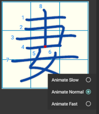
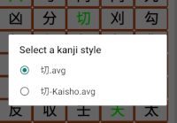

.
Kanji Animator Usage
Introduction
The Kanji Animator is intended to help a Japanese Language Student learn
how to write Chinese Kanji Characters. The characters as written by
Japanese and Chinese people are slightly different. This app uses the
Adobe NotoSansJP font so you will see Japanese style characters in the
selector. I believe the character animation are also Japanese style.
Usage
General Use
The app is meant to be used in several ways.
- First, you can "share selected
kanji" from other apps as text. For instance if you are looking at a
Japanese page on your web browser or an on-line dictionary that supports
sharing, you can select the text you are interested and select "Share." This
application should be one of the apps you can select. Selecting it
will open the app with the first character with an animation view.
- Second, when you open the app, you will see a selection view below the app
toolbar. You can use the clipboard to copy/paste from another app into this one.
- Finally, when you open the app, you will see a grid-view that displays all
the kanji this app knows about. Selecting any of them will open an animation
of the selected Kanji.
Select animation speed

As illustrated above, animation has three different rates.
Access these with a long-click on the animation window.
Select from multiple writing style

You will note that the Kanji Selection Grid shows two different colors.
Those in black have only one writing style while those in green have
multiple styles. When you select a kanji with multiple styles, you
will be prompted to select the style you want.
Credits and Licensing
The Vector Graphics Files used in these animations were supplied
by KanjiVG. KanjiVG
is an open source project licensed under the
CREATIVE COMMONS PUBLIC LICENSE.
license is here.
The font used in this app is
Noto Sans CJK JP from Adobe. I use
a Japanese specific font because I've encountered cases
where Japanese/Chinese fonts are so different I thought they
were different characters.
The license for these fonts is here.